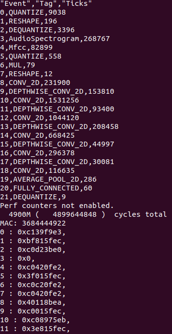

Lab 2 : Quantization and SIMD MAC#
Introduction#
In the previous lab, we successfully ran the float32 Keyword Spotting (KWS) model on CFU-Playground. In this lab, we will focus on running a quantized int8 KWS model and leverage the benefits of quantization to achieve acceleration.
Run Quantized Model - 10%#
$ cd CFU-Playground/proj
$ cp -r <lab1 proj folder> <lab2 proj folder>
$ cd <lab2 proj folder>
Quantizing a float model to int8 can be quite complex and is not the primary focus of this lab. Therefore, we have provided the quantized model for you. You can simply replace CFU-Playground/common/src/models/ds_cnn_stream_fe/ds_cnn_stream_fe.tflite with the new model provided below.
Ensure that the ds_cnn_stream_fe model is included in the project’s Makefile. Additionally, you may want to include the pdti8 model to verify if your design can pass the golden test.
# Uncomment to include specified model in built binary
DEFINES += INCLUDE_MODEL_PDTI8
#DEFINES += INCLUDE_MODEL_MICRO_SPEECH
#DEFINES += INCLUDE_MODEL_MAGIC_WAND
#DEFINES += INCLUDE_MODEL_MNV2
#DEFINES += INCLUDE_MODEL_HPS
#DEFINES += INCLUDE_MODEL_MLCOMMONS_TINY_V01_ANOMD
#DEFINES += INCLUDE_MODEL_MLCOMMONS_TINY_V01_IMGC
#DEFINES += INCLUDE_MODEL_MLCOMMONS_TINY_V01_KWS
#DEFINES += INCLUDE_MODEL_MLCOMMONS_TINY_V01_VWW
DEFINES += INCLUDE_MODEL_DS_CNN_STREAM_FE
Build and load the hardware and software to test.
$ make clean
$ make prog
$ make load
The result should look like the image below. As with the previous lab, the predicted results should also be correct.

You should observe a significant reduction in the number of cycles, as the quantized model eliminates the need for complex floating-point calculations. However, we can further enhance performance by leveraging another benefit of quantization: reduced bit width.